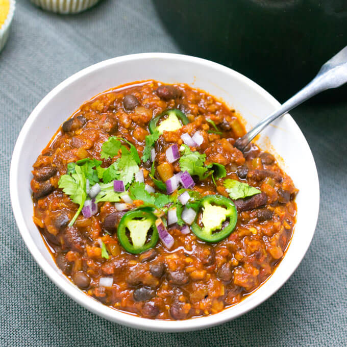

Vegan Chili

Description
This is a delicous recipe for chili using
only vegan ingredients. Even without meat,
this chili is hearty and filling. And of
course it wouldn't be chili without a spicy kick.
ingredients
- 1 cup textured vegetable protein (tvp)
- 1/2 cup vegetable broth (warm or hot)
- 3 tbsp low-sodium soy sauce
- 2 dried Chiles de arbol
- 3 dried New Mexico chiles
- 2 dried guajillo chiles
- 2 dried California chiles
- 2 chipotle peppers in adobo sauce
- 2 tbsp adobo sauce
- 2 tbsp vegetable oil
- 1 large onion, finely diced
- 3 cloves garlic, minced or grated
- 1 and 1/2 tbsp ground cumin
- 1 tsp dried oregano
- 1 and 1/4 cups crushed or pureed tomatoes
- 1/2 cup beer (light)
- 1 and 3/4 cups cooked black beans
- 1 and 3/4 cups cooked kidney beans
- 1 cup reserved chile liquid
Steps
- Stir together TVP with veggie broth and soy sauce. Set aside
- Remove stems and seeds from the dried chiles
- Place the dried chiles in a microwave-safe
bowl and microwave for 15 seconds or until slightly roasted,
aromatic and pliable. In some microwaves, this may take up to 30
seconds, but go 5 seconds at a time and be careful not to
burn the chiles. Add water to the bowl to cover the chiles, cover the
bowl and microwave for another 4 minutes. Let stand for 5 minutes.
- Reserving 1 cup of the liquid, drain the chiles. Add
them to a blender along with chipotle peppers and adobo sauce.
Blend until smooth, adding a splash of the reserved liquid as needed.
- Sample the reserved liquid. If it is bitter, discard and use water instead
- Warm the oliver oil in a pot. Add diced onion and a pinch of salt and stir.
Cook the onion, stirring occasionally, until softened. Add
the garlic, cumin, and dried oregano. Stir. Cook for 60 seconds or until fragrant.
- Stir in the TVP mixture. Cook for 2-3 minutes or until it's starting to dry out
Add the pureed chile mix and tomatoes. Stir constantly until mixture starts to bubble
- Stir in the beer, cooked beans, reserved liquid, and a pinch of salt. Stir well, then
reduce the mixture to a gentle simmer. Partially cover, and continue to cook, stirring
occasionally. Cook for about 45 to 60 minutes or until thickened, slightly reduced, and rich in color.
- Season to taste. The chili likely will need more salt to bring it together. It tends to taste
more bitter and sharp when first made. Sitting overnight, the sharpness and bitterness will mellow.